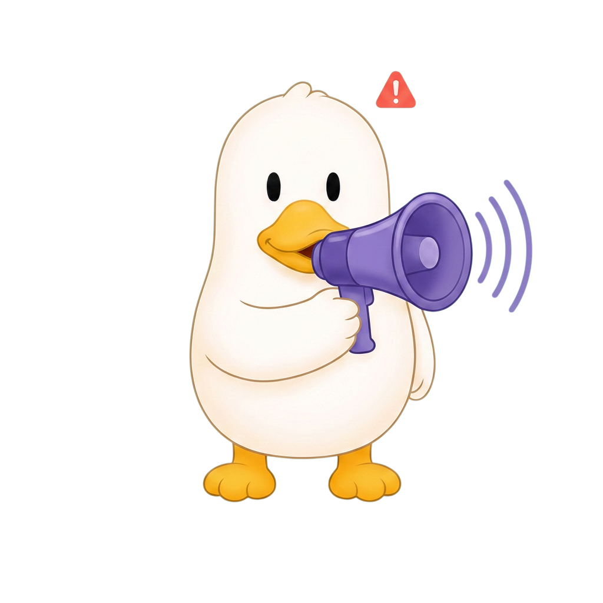
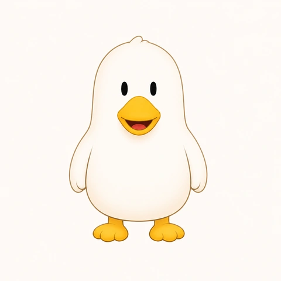
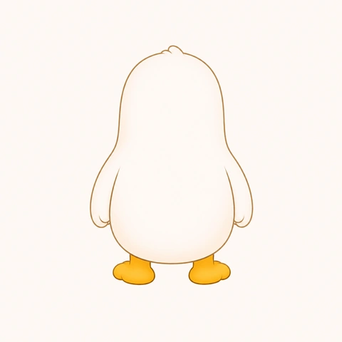
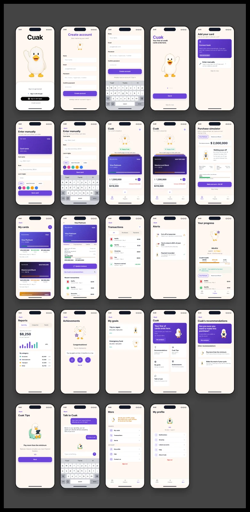
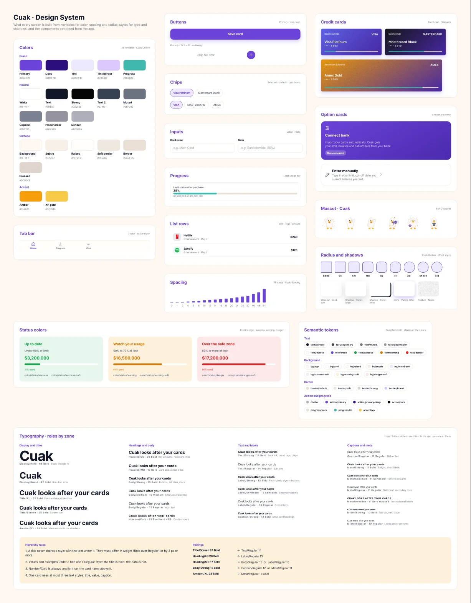

Design System
The behavioral design system behind Cuak — color tokens, mascot emotional states, 60/40 zoning architecture, and annotated UI components. Every pixel has a psychological purpose.
Each color maps to an emotional state. No decorative choices — every token has a behavioral role.
Accent — Happy
--accent
var(--brand-cuak)
Warning — Worried
--accent-warn
var(--accent-amber)
Sad — Reset
--accent-sad
var(--accent)
Background
--bg
#1E1A2E
Card Surface
--bg-card
#2D2845
Text Primary
--text
#F2EFE8
Each state maps to a psychological moment in the user's credit journey. The duck reacts — the user feels seen, not judged.
Waiting — Ready
Trigger: no cards added yet, or app open with no recent activity
Pure potential. No pressure. Cuak waits with expectation — not judgment.
Waiting stateHappy — On Track
Trigger: credit usage healthy / improving
Positive reinforcement. Cuak celebrates consistency — the system rewards, not just records.
Core Drive 2: Accomplishment
Watchful — Keep an Eye
Trigger: medium credit usage
Nothing is wrong yet. Cuak pays attention so the user does too.
Worried — At Risk
Trigger: approaching credit threshold
Loss aversion activated. Cuak's distress makes risk visible and empathetic — not punitive. Most powerful retention state.
Core Drive 8: Loss AversionAlert — Act Now
Trigger: very high usage, limit maxed out or overdraft risk
Cuak reacts before the user makes the mistake, so the limit arrives as a face rather than a figure.
Core Drive 8: Loss AversionSad — Reset (recovery moment)
Trigger: threshold crossed. Sits outside the five states
Emotional cost of loss, followed by resilience. Cuak mourns with the user — then invites them back without shame.
Guilt-free restartBefore the states shown above were finalised, the character went through a reference pass — front, back and a raised-arm gesture — to lock proportions before drafting expressions. Not every take made it in.

Front — neutral

Back view
Gesture range
Read as alarm, not concern — closer to a warning gesture than an emotional cue. Worked against the "empathetic, not punitive" principle the Worried state is built on (see Annotated UI, below).
Same trigger, no gesture. The expression alone carries the state — arms stay down so it reads as concern, not alert.
Every surface — full screen or home widget — splits 60% data / 40% emotional state. Each zone activates a specific Octalysis Core Drive.
Small 2×2
Progress Focus
Usage % + current emotional state. Minimal surface, maximum signal.
→ Core Drive 2: Accomplishment
Small 2×2
Status Focus
Credit score tier + awareness metric. Contextual identity — who you are financially right now.
→ Core Drive 5: Social Influence
Wide 4×2 — Risk
Urgency Surface
Real-time countdown to threshold + Worried Cuak. Activates loss aversion passively.
→ Core Drive 8: Loss & Avoidance
Strategic annotations connecting each UI element to its psychological function.
Mascot proxy
Cuak externalizes financial anxiety into a character — reducing cognitive load. Users process emotion through the duck, not through raw numbers. (Epley & Waytz — Anthropomorphism)
Usage % indicator — 60% zone
Credit utilization shown as percentage, not currency. Relative framing reduces anxiety vs absolute debt amounts. Positioned in the dominant 60% data zone.
Emotional state color — 40% zone
Background color shifts with Cuak's state. Green = safe, yellow = at risk, purple = your move: the reset after a loss and the primary action. Visceral-level feedback (Don Norman) — no reading required.
Action nudge
Context-aware CTA that changes with emotional state. Cuak suggests — never commands. (Thaler & Sunstein — Nudge Theory)
Reusable components built around the emotional states. Each one has a defined behavioral role.
Emotional State Badge
Color + label encode the current state. Used in widgets, notifications, and cards. Always paired with mascot visual.
Credit Usage Progress Bar
Determinate progress — communicates exactly where the user stands. Color shifts at threshold to signal state change.
Action Card
Cuak suggests
Pay $80 to drop below 30%
→ This keeps me happy 🦆
Nudge card that appears when usage approaches a threshold. First-person mascot voice — empathetic, not punitive.
Countdown Widget (Urgency)
⚠ Payment due
3d 14h
Before Cuak gets worried
Real-time countdown activates Core Drive 8 (Loss Aversion) passively. Lives on home screen widget — visible without opening the app.
Your credit
is doing well.
Credit usage: 42%
You're using 42% of your available credit. Cuak recommends keeping this below 30% for the best credit score impact.
Credit utilization · Updated now
Cuak's 24 screens were built quickly, from HTML imported into Figma. Every value arrived as a number, not as a token, and the file drifted. This is how I used Claude, connected to Figma through an MCP server, to find the drift, organise the file, turn the design system into tokens, and keep screens and system checked against one JSON file.
Cuak is a concept project. The numbers below are counts from the Figma file and the checks, not user data.
The screens came from HTML imports, so colors, radii and sizes landed as literal values. None of it showed while drawing. It showed when two screens sat side by side. Measured on the 390 flow:
colors set by hand, not bound to a variable
different radii on content cards (8, 12, 16, 20, 24)
text styles, most of them near-duplicates such as 14.16 Bold and 12.98 SemiBold
versions of the same design, at 390 and at 460 wide
pages, several empty or from other projects
There was also a hierarchy problem: titles set in the same style as the text under them, as on the Goals card.
The tokens had to be data, not a picture of data. The checks had to be repeatable, and when something was wrong Claude had to be able to say what and where.
figma-console-mcp is an MCP server plus a Figma plugin (the Desktop Bridge). Once the plugin is open in a file, Claude can call tools against it: run Plugin API code in the open file, screenshot any node, read comments. I did not build the server. I built the workflow on top of it: read the file, change one thing, screenshot it, and only then move on.

Pages: 10 down to 5. Cover, UX process, Design system, UI mobile, Assets. Pages from other projects were archived, then removed.
Layers. A role/name convention (cta/, card/, chip/, nav/, row/) so a layer says what it is. Sections instead of loose frames, and the 24 screens ordered by use.
One language, one name. All copy in English, the product written Cuak everywhere. A UX process page built from the screens: an 8-step main flow and 13 branch screens.
The design system became variables and text styles in Figma, so a value has a name and a reason instead of a hex.
| Collection | Contents |
|---|---|
| Colors | 27 variables: 21 palette colors and 6 status colors |
| Semantic | 28 aliases that say what a color is for: text/primary, bg/card, border/soft |
| Spacing | 18 steps plus 9 layout aliases |
| Radius | 9 steps, including sheet |
| Size | 11 fixed dimensions |
| Type | 24 text styles named Zone/Variant: Display, Title, Amount, Heading, Body, Number, Text, Label, Caption, Meta, Micro |

Hierarchy. A title never shares a text style with the text under it. It is written into the lint, so it no longer depends on anyone remembering it.
Status colors. Credit usage picks the color: under 50% of the limit is green, 50 to 79% is amber, 80% or more is red. Those thresholds are a design decision, not measured behavior.
Figma is where a token is edited. tokens.json is what Claude reads. The generated files are never edited by hand.
Figma variables + styles → export script (runs inside Figma) → tokens.json + tokens.css (generated) → parity check: do the files and Figma agree? → lint: do the screens obey the tokens? → report
The JSON follows the W3C design tokens format and has two layers, primitives and semantic. Components use the semantic layer:
"status": {
"danger": { "$value": "#DC2626", "$type": "color",
"$description": "Over the safe zone: 80% or more, and costs such as interest" }
}
...
"text": {
"danger": { "$value": "{color.primitive.status.danger}", "$type": "color" }
}
Ten rules run inside Figma and return findings with the node id. Five are errors, five are warnings.
| Rule | Type | What it checks |
|---|---|---|
| color-bound | error | Every fill and stroke is bound to a color variable |
| text-role | error | Every text uses a role style, never a free size |
| hierarchy | error | A title never shares a style with the text under it |
| status-color | error | Usage bars use the color that matches their percentage |
| overflow | error | No text leaves the screen or its container |
| min-text-size | warning | Text is at least 10 px |
| radius-bound | warning | Corner radius comes from the radius variables |
| spacing-bound | warning | Gap and padding on the scale are bound to variables |
| back-nav | warning | Screens outside the top level have a tab bar or a back control |
| screen-structure | warning | 390 x 871 frame and a 24 px side margin |
When a finding is real, I fix it in Figma. When it is a false positive, I fix the rule: section labels such as "Finance" and "Account" were flagged as titles sharing a style, so the rule now knows what a section label is.
Exceptions are brand logos, the keyboard and the card-color swatches, listed in the rules with the reason.
Role styles instead of near-duplicates.
24 screens, 10 rules, 0 errors, 0 warnings on the last run. The parity check caught 4 line-height values I had typed by hand into tokens.json; they were regenerated from Figma. The lint found the one radius off the scale, on the sign-in sheet, and it became a token, radius/sheet.
It is not a CI job. It runs through Claude and the MCP server. CI would need the Figma REST API with a token.
Only the 390 flow is linted. The 460-wide test screens are not.
The app does not read these tokens. Its own theme file (apps/mobile/constants/theme.ts, Expo) is not generated from them and differs: radii of 10, 14, 20 and 28 against 8 to 24 here, and a different red.
theme.ts from tokens.json and add a drift check against the current one.